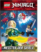

LEGO NINJAGO – Meister der Spiele

Die Ninja sind los! Neue Abenteuer aus der Welt der Ninjago City Helden! Die sechs mutigen Ninja Lloyd, Cole, Kai, Jay, Zane und Nya mussen die Burger von Ninjago City wieder vor bosen Machten beschutzen. Merkwurdige und unentdeckte Welten sowie dunkle Geheimnisse warten auf die beliebten Helden. Werden die Helden von Ninjago City auch diesmal alle Missionen meistern und die Plane ihrer Gegner durchkreuzen konnen? Das Lesebuch mit einer Spaßnenden Einfuhrung und einem Glossar der Helden von Ninjago City ist nicht nur fur langjahrige LEGO NINJAGO Fans, sondern auch fur Einsteiger Spaßnend.